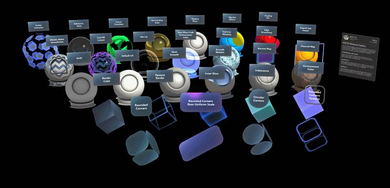
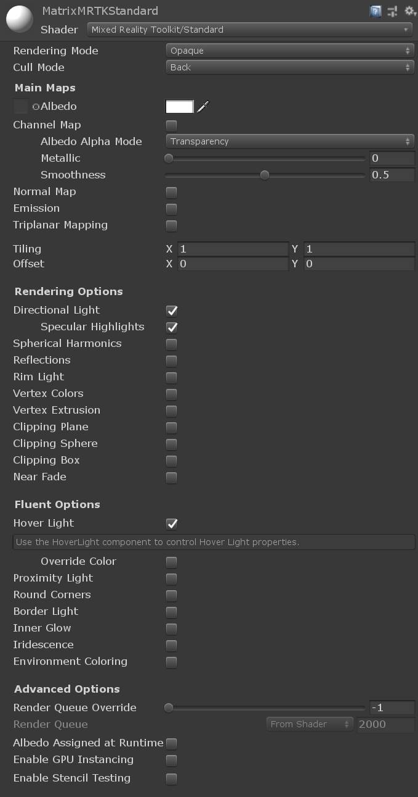
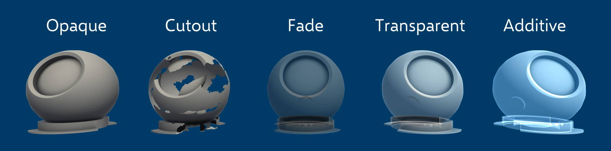
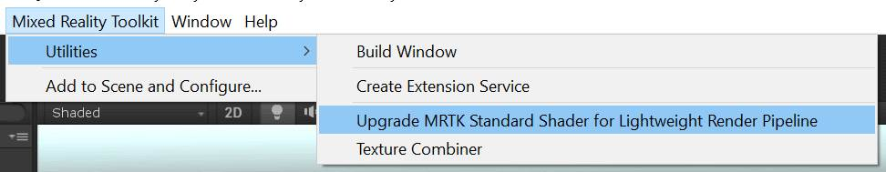
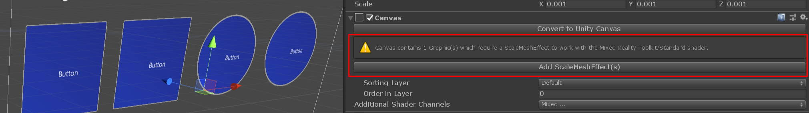
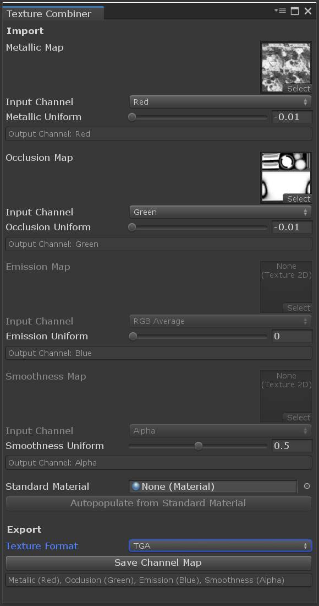
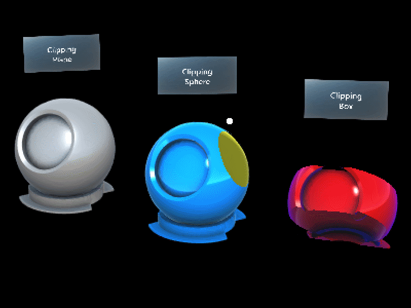
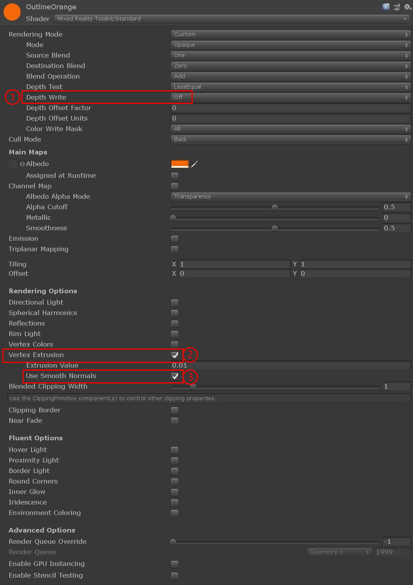
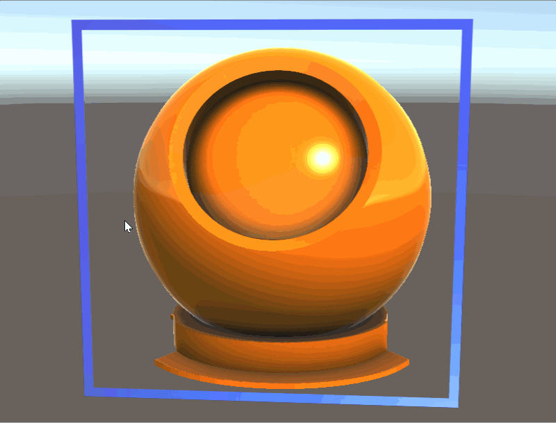
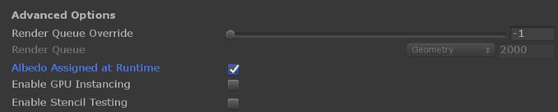

MRTK 标准着色器

MRTK标准着色系统(Standard shading system)利用一个单一的，灵活的着色器，可以实现类似于Unity的标准着色器的视觉效果，实现流畅设计系统原则，并保持性能在混合现实设备上。
示例场景
你可以在MRTK/Examples/Demos/StandardShader/Scenes/下面的MaterialGallery 场景中找到材质的例子。这个场景中的所有材质都使用了MRTK/标准材质。

你可以在 MRTK/Examples/Demos/StandardShader/Scenes/下的StandardMaterialComparison 比较场景来比较和测试MRTK/标准着色器和Unity/标准着色器的例子。

架构
MRTK/标准着色系统是一个"uber shader" 它使用[Unity's 的着色器程序变体特性] 根据材质属性自动生成最佳着色器代码。当用户在material inspector中选择材质属性时，他们只需要为启用的特性付出性能代价。
Material inspector
MRTK/标准材质有一个自定义的material inspector，叫做MixedRealityStandardShaderGUI.cs. inspector自动启用/禁用着色器功能，基于用户选择和辅助设置渲染状态。有关每个特性的更多信息，请在Unity编辑器的tooltip中悬停每个属性查看/

inspector的第一部分控制材质的渲染状态。Rendering Mode决定了材质什么时候以及如何渲染。MRTK/Standard着色器的目标是镜像 Unity/Standard着色器中的渲染模式。MRTK/标准着色器还包括一个Additive(附加)渲染模式和Custom(自定义) 渲染模式，用于完整的用户控制。
| 渲染模式 Rendering Mode | ||
|---|---|---|
| Opaque | (默认)，适用于没有透明区域的普通实体 | |
| Cutout | 允许创建透明效果，在不透明和透明区域之间有硬边。在这种模式下，没有半透明区域，纹理要么是100%不透明的，要么是不可见的。这在使用透明创建材质的形状(如植被)时非常有用。 | |
| Fade | 允许透明度值完全淡出对象，包括它可能有的任何高光或反射。如果您想使淡入或淡出的对象具有动画效果，此模式非常有用。它不适合渲染逼真的透明材质，如透明塑料或玻璃，因为反射和高光也会淡出。 | |
| Transparent | 适用于渲染逼真的透明材质，如透明塑料或玻璃。在这种模式下，材质本身会有透明度值(基于纹理的alpha通道和颜色的alpha值)。然而，反射和照明高光将保持在完全清晰的情况下，因为是真正的透明材质。 | |
| Additive | 启用了添加的混合模式，该模式将以前的像素颜色与当前像素颜色相加。这是首选的透明模式，以避免透明排序问题。 | |
| Custom | 允许手动控制呈现模式的每个方面。仅供高级使用。 |

| 剔除模式 Cull Mode | |
|---|---|
| Off | 禁用面剔除。只有当需要双面网格时，才应该将剔除设置为Off。 |
| Front | 支持正面剔除 |
| Back | (默认)启用背面剔除。为了提高渲染性能，应该尽可能多地启用背面剔除 |
性能
与Unity标准着色器相比，使用MRTK标准着色器的一个主要优点是性能。MRTK标准着色器是可扩展的，只利用启用的特性。然而，MRTK标准着色器也被编写为提供可与Unity标准着色器相媲美的美学效果，但成本要低得多。比较着色器性能的一个简单方法是通过需要在GPU上执行的操作数。当然，计算的大小可能会随着启用的特性和其他呈现配置的不同而变化。但是，一般来说，MRTK标准着色器执行的计算要比Unity标准着色器少得多。
Unity 标准着色器统计示例

MRTK 标准着色器统计示例

Note
这些结果可以通过在Unity inspector中选择并查看shader asset生成，然后点击Compile and show code按钮。
光照
MRTK/标准使用了一个简单的近似照明。因为这个着色器没有计算物理正确性和能量守恒，它渲染得又快又有效率。Blinn-Phong是一种主要的照明技术，它混合了Fresnel和基于图像的照明，以近似物理照明。着色器支持以下照明技术:
Directional light
着色器将尊重场景中第一个Unity Directional Light的方向，颜色，和强度(如果启用)。 Dynamic point lights, spot lights，或任何其他Unity light将不考虑在实时照明。
Spherical harmonics
如果启用，着色器将使用Light Probes来近似场景中的光，使用Spherical Harmonics。为了降低计算成本，对每个顶点进行Spherical harmonics计算。
Lightmapping
对于静态照明，着色器将尊重Unity的Lightmapping system创建的lightmaps。只需将渲染器器标记为static(或lightmap static)就可以使用lightmaps。
Hover light
- 参见 Hover Light
Proximity light
Lightweight Scriptable Render Pipeline support
轻量级脚本渲染管线支持
MRTK包含一个升级路径，允许开发人员在MRTK着色器中使用Unity的轻量级可脚本渲染管线(LWRP)。在Unity 2019.1.1f1和Lightweight RP 5.7.2包中测试。或关于如何开始使用LWRP的说明，请参见此页。
要执行MRTK升级，选择: Mixed Reality Toolkit -> Utilities -> Upgrade MRTK Standard Shader for Lightweight Render Pipeline

升级发生后，MRTK/标准着色器将被改变，任何品红(着色器错误)材质应该被修复。要验证升级成功，请检查控制台:Upgraded Assets/MixedRealityToolkit/StandardAssets/Shaders/MixedRealityStandard.shader for use with the Lightweight Render Pipeline.
UGUI 支持
MRTK标准的着色系统与Unity的内置[UI系统]一起工作(https://docs.unity3d.com/Manual/UISystem.html)。在Unity UI组件上，unity_ObjectToWorld矩阵不是图形(Graphic)组件所在的本地转换的转换矩阵，而是它的父画布(Canvas)的转换矩阵。许多MRTK/标准的着色效果需要对象缩放才能知道。为了解决这个问题， ScaleMeshEffect.cs将在UI网格构建过程中将缩放信息存储到UV通道属性中。
注意，当使用Unity图像(Image)组件时，建议为源图像指定 "None (Sprite)"，以防止Unity UI生成额外的顶点。
MRTK中的画布将提示添加 ScaleMeshEffect.cs ，当需要时:

Texture combiner
为了提高与Unity标准着色器的相等，每个像素的金属，平滑，放射和遮挡值都可以通过通道包装(channel packing)来控制。例如:

当你使用channel packing，你只需要采样和加载一个纹理到内存，而不是四个单独的。当你在Substance或Photoshop这样的程序中编写纹理贴图时，你可以像下面这样手工包装它们:
| Channel | Property |
|---|---|
| Red | Metallic |
| Green | Occlusion |
| Blue | Emission (Greyscale) |
| Alpha | Smoothness |
或者，你可以使用MRTK纹理合并工具。要打开工具，选择: Mixed Reality Toolkit -> Utilities -> Texture Combiner，它将打开下面的窗口:

这个窗口可以通过选择Unity标准着色器并点击"Autopopulate from Standard Material."来自动填充。或者，您可以手动指定每个红色、绿色、蓝色或alpha通道的纹理(或常数值)。纹理组合是GPU加速的，不需要输入的纹理是CPU可访问的。
附加特性文档
下面是MRTK/标准着色器提供的一些特性细节的额外细节。
Primitive clipping

Mesh outlines
许多mesh outline技术是使用post processing技术完成的。后期处理提供了高质量的轮廓，但在许多混合现实设备上可能非常昂贵。你可以在 MRTK/Examples/Demos/StandardShader/Scenes/下的OutlineExamples场景中找到一个演示mesh outline用法的场景。
MeshOutline.cs和 MeshOutlineHierarchy.cs 可以用来渲染一个网格渲染器(mesh renderer)周围的轮廓。启用此组件将引入一个正在概述的对象的附加渲染通道，但设计用于在移动混合现实设备上高效运行，并且不使用任何post进程。这种效果的局限性包括它不能很好地工作在非watertight的对象(或要求是双面的)和深度排序问题可能发生在重叠的对象上。
outline behaviors被设计用来与MRTK/标准着色器一起使用。轮廓材质通常是纯色的，但也可以配置成各种各样的效果。轮廓材质的默认配置如下:
- Depth Write - 应禁用outline材质，以确保outline不会阻止其他对象的绘制
- Vertex Extrusion - 需要启用render the outline
- Use Smooth Normals - 这个设置对于某些网格是可选的。Extrusion是通过沿着顶点法线移动一个顶点而发生的，在一些网格上沿着默认法线挤压会导致轮廓的不连续。要修复这些不连续性，可以选中此框以使用另一组由
MeshSmoother.cs生成的平滑法线(smoothed normals)
MeshSmoother.cs 是一个组件，可以用来自动生成一个网格上的平滑法线。此方法将网格中共享空间中相同位置的顶点分组，然后对这些顶点的法线求平均值。此过程创建基础网格的副本，仅在需要时使用。
- 通过
MeshSmoother.cs生成的平滑法线。. - 使用默认法线时，请注意立方体角周围的部分.
模版测试 Stencil testing
内建在可配置的模版测试支持，以实现广泛的影响数组。如入口:

实例颜色支持 Instanced color support
实例颜色支持给数以千计的GPU实例网格独特的材质属性:

三平面映射 Triplanar mapping
三平面映射(Triplanar mapping)是一种以编程方式对网格进行纹理处理的技术。常用于地形，网格无uv，或难以展开的形状。这个实现支持世界或局部空间投影，混合平滑的规范，和法线贴图支持。注意，每个使用的纹理需要3个纹理样本，所以在性能关键的情况下要谨慎使用。

顶点挤压 Vertex extrusion
Vertex extrusion在世界空间。用于可视化挤压边界体积或网格内/外的过渡。

杂项 Miscellaneous
用于控制反照率(albedo)优化的复选框。当没有指定反照率纹理时，将禁用优化反照率操作。这对于控制远程纹理加载非常有用。
只需勾选此框:

支持每个像素的裁剪纹理，基于局部边缘的抗锯齿和法线贴图缩放。